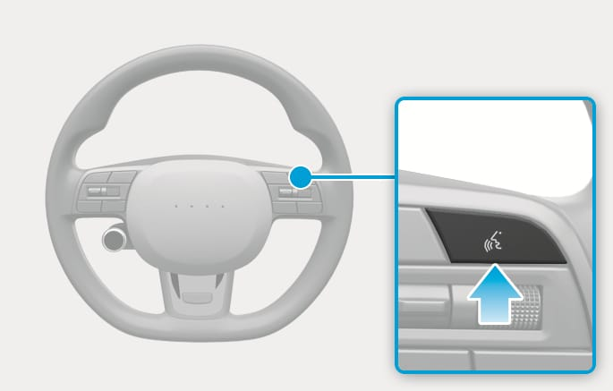

음성 인식 시스템

2C_SteeringWheelVoiceRecognitionButton
음성 명령 버튼을 누른 후 다양한 인포테인먼트 기능을 실행할 수 있습니다.
-
자세한 사용 방법은 인포테인먼트 시스템 웹 매뉴얼을 참고하십시오.

2C_SteeringWheelVoiceRecognitionButton
음성 명령 버튼을 누른 후 다양한 인포테인먼트 기능을 실행할 수 있습니다.
자세한 사용 방법은 인포테인먼트 시스템 웹 매뉴얼을 참고하십시오.